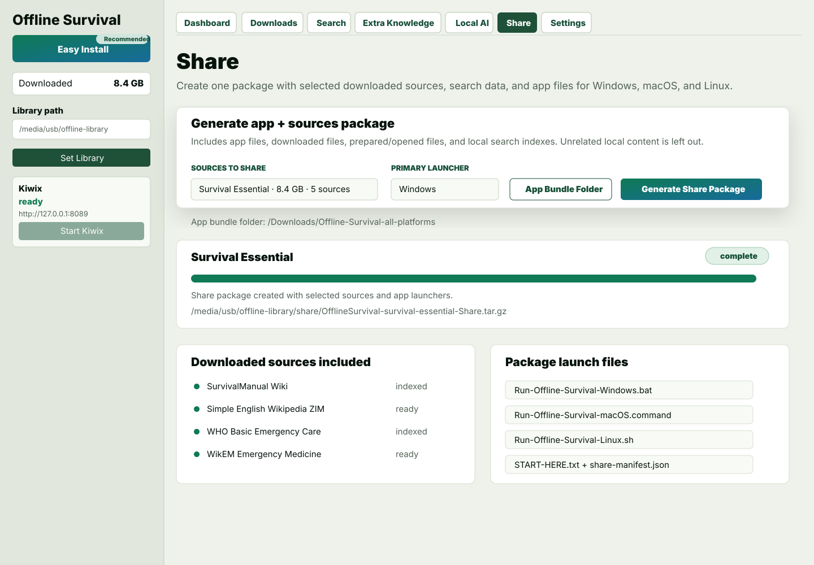

Curated survival and rebuilding sources
Profiles group practical public knowledge by disk size, from small emergency references to large civilization-recovery archives.
Private offline knowledge library
Offline Survival downloads trusted public knowledge packs, indexes them for search, and can package the result for another computer. It is a practical library builder, not a cloud service.

What it is
Offline Survival is a desktop app for preparing a useful knowledge library before the network becomes unreliable. It downloads public references into a folder you control, keeps the original files, prepares readable/searchable copies, and helps you move the finished library to another machine.
Profiles group practical public knowledge by disk size, from small emergency references to large civilization-recovery archives.
Downloaded files, prepared readable copies, search indexes, logs, and optional model data live in the library folder you control.
The app indexes supported sources locally, then opens the original or prepared material so you can inspect the reference directly.
Create a share package with selected sources, search data, and available app files for Windows, macOS, and Linux.
Functionality
The app manages the boring parts of building an offline archive: source selection, disk planning, downloads, opening formats, indexing, local AI safety, and cross-platform sharing.
Start with a small emergency archive or build a much larger library for serious long-term reference. Profiles are curated by usefulness and expected size.
Sources are downloaded into the selected library folder with state tracking, retry paths, expected sizes, mirrors where available, and license/attribution metadata.
ZIMs open through a local Kiwix server, PDFs open with the system viewer, and supported archives can be extracted into readable local copies.
Supported sources are normalized and indexed so you can find material without a network. Search points back to the local source, not a remote website.
Import local PDFs, EPUBs, Markdown, HTML, CSV, JSON, text files, and ZIMs so personal or organization-specific references live beside public sources.
Install an app-managed Ollama runtime and recommended models. Startup is blocked when available RAM is not safe for the selected installed chat model.
Create a package with selected downloaded sources, indexes, metadata, and available app files for Windows, macOS, and Linux handoff.
The library, indexes, imported files, logs, and optional AI models stay on the selected computer or drive. Internal services bind to localhost by default.
Local AI with brakes
Local AI can use Ollama and recommended models, but the app checks available RAM before starting the selected chat model. If the machine is under pressure, Local AI stays blocked and normal search still works.


Offline handoff
Share packages are built from sources already present on disk. Pick the primary target OS, choose the extracted all-platforms app bundle, and the package can include Windows, macOS, and Linux app folders beside the prepared offline library.
What can go inside
The catalog focuses on material that remains useful when you cannot search the web: first aid, public health, repair, farming, engineering, maps, education, reference works, and practical how-to knowledge.
Contribute
Feature contributions should be focused, tested, documented, and validated before opening a pull request.
New downloadable sources go through the catalog manifest with license, attribution, expected size, runtime, and profile placement.
Do not commit downloaded PDFs, ZIMs, archives, local databases, model files, secrets, or generated release bundles.
Open CONTRIBUTING.md before preparing a pull request.
Get it
Choose the file for your operating system. Each platform ZIP also contains the all-platforms app bundle for preparing mixed-OS share packages.